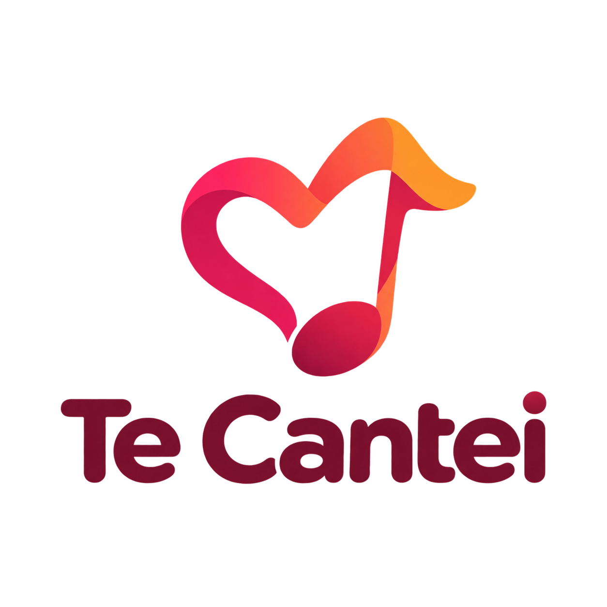
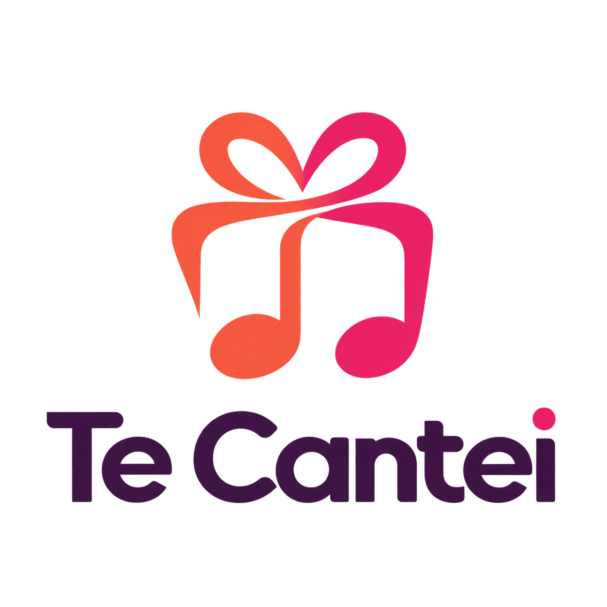
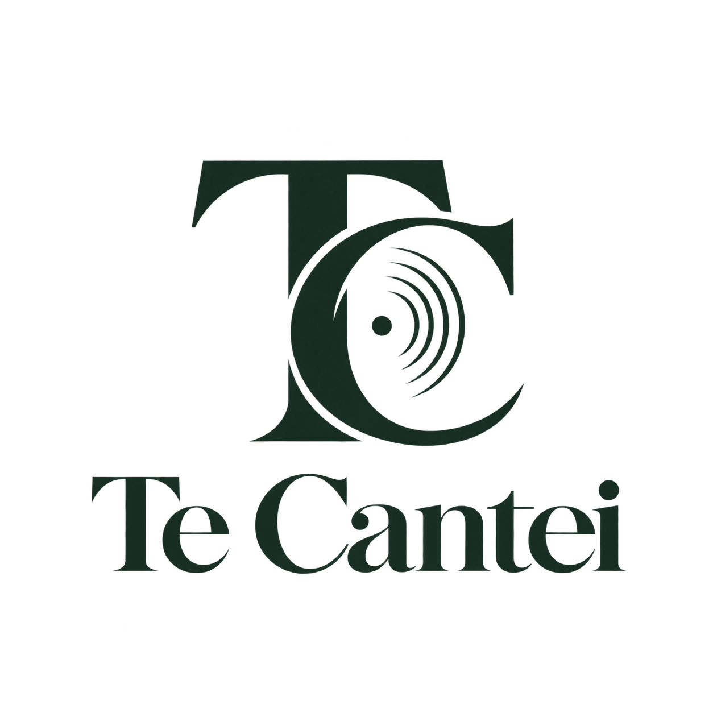
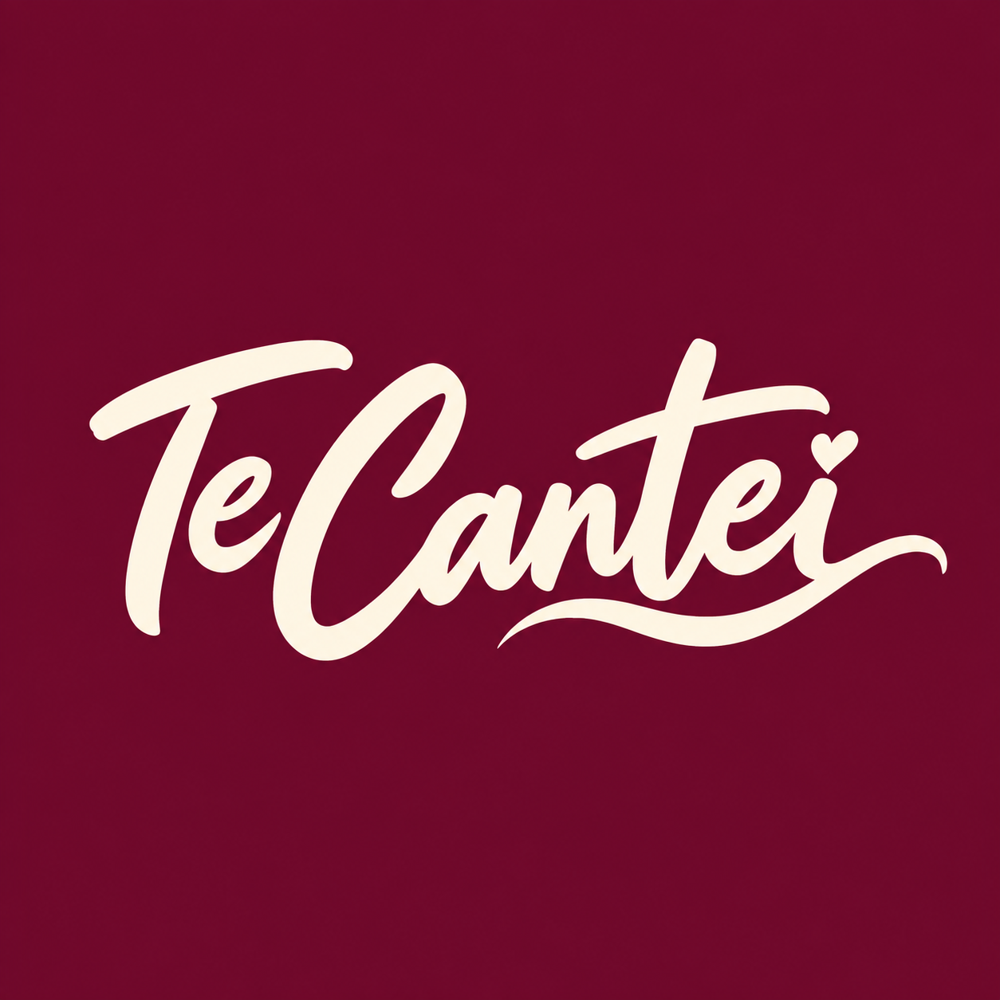
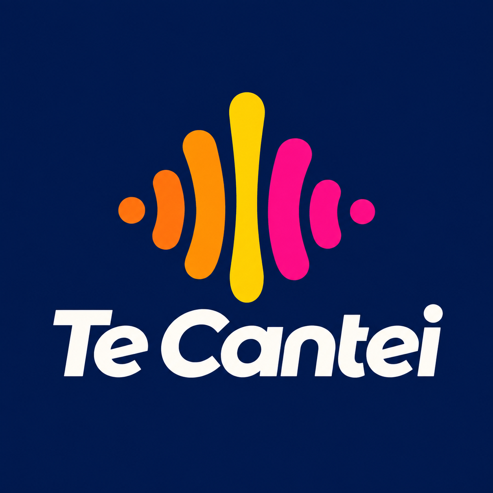
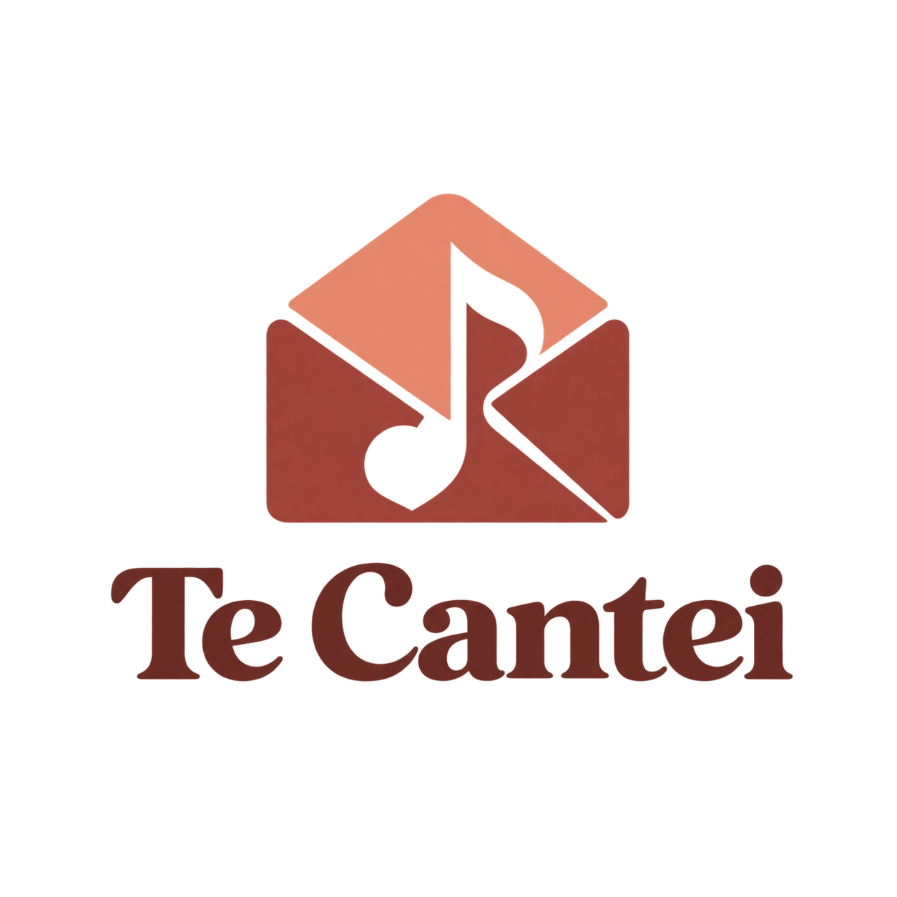

Seis caminhos para uma marca que transforma histórias em música.
Escolha sua direção favorita.

Afeto e melodia em um único símbolo.

Um presente que ganha forma de música.

Uma direção clássica e sofisticada.

Uma dedicatória pessoal e expressiva.

Ritmo, energia e presença digital.

Uma mensagem transformada em canção.